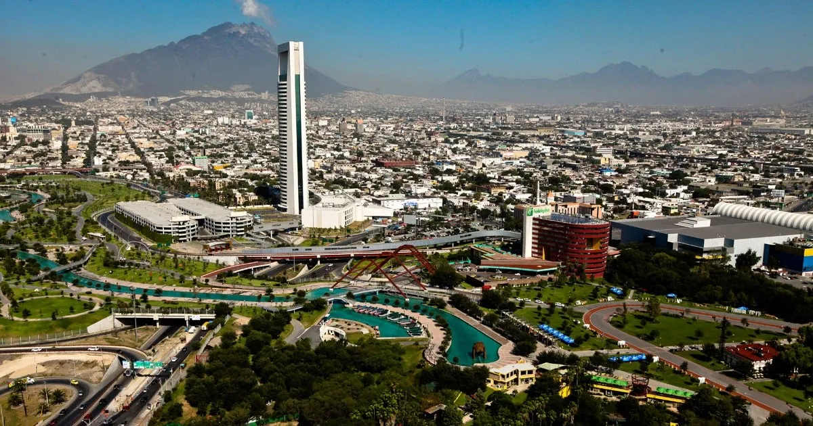

Avanza recuperación de turismo
de reuniones en NL

Con el aumento de exposiciones, congresos y convenciones, a partir de que se abrió el aforo al 100%, el turismo de reuniones está despegando en Nuevo León, con una ocupación hotelera de entre 60 y 70%, cifra que está casi al nivel promedio anual prepandemia.
Monterrey, NL. Con el aumento de exposiciones, congresos y convenciones, a partir de que se abrió el aforo al 100%, el turismo de reuniones está despegando en Nuevo León, con una ocupación hotelera de entre 60 y 70%, cifra que está casi al nivel promedio anual prepandemia, comentó David Manllo, director de la Oficina de Convenciones y Visitantes de Monterrey.
Explicó que la ocupación hotelera en el 2019 fue de 68%, cayó a 26% en el 2020, en el 2021 incrementó a 35% y con la expo Fabtech y otros eventos podrían alcanzar entre 60 y 70% de ocupación.
“Queremos hablar de lo que significan estos grandes eventos con el turismo, porque siendo Monterrey una ciudad con vocación de negocios, que atrae eventos nacionales e internacionales, los visitantes se convierten en un turista, esa es la importancia que tenemos a corto plazo. Llenando cuartos de hotel o restaurantes y a largo plazo buscamos generar valor (con eventos internacionales) y crear empleos”, aseveró el funcionario.
Recordó que después de dos años de que este sector estuvo restringido por los protocolos para evitar contagios de Covid-19, en los últimos meses se han realizado grandes congresos de América Latina. En el caso de Fabtech México 2022, que se efectuará del 3 al 5 de mayo en Cintermex, “tendremos hoteles suficientes”.
Jorge Arizmendi, director de Fabtech México 2022, estimó que el evento tendrá más de 8,000 visitantes calificados, lo que podría generar una derrama de 200 millones de dólares en la compra de maquinaria y equipo, además de gastos adicionales por 50 millones de pesos por pago de hotel, restaurantes y paseos.
Impulsarán a Nuevo León como destino turístico para bodas
Monterrey.- Detonar el “turismo de romance” y que más bodas se realicen en Nuevo León al impulsar los atractivos de la localidad y se genere una derrama económica superior a los 2.5 millones de pesos por cada una, es parte del objetivo de la 12va. edición del Congreso de Bodas LAT.
Para ello se reforzarán de manera profesional, responsable e incluyente empoderando y capacitando a los empresarios del segmento durante el evento a celebrarse del 5 al 8 de septiembre, al resaltar la tendencia a realizar estos eventos en destinos urbanos.
El evento reúne a más de 500 profesionales de la industria de bodas y turismo de México y Latinoamérica en el Hotel Camino Real, donde Monterrey es sede, al considerar que actualmente México es el principal destino receptor de bodas de parejas estadunidense.
“Lo que queremos es detonar muchos más destinos de México, aparte de las playas y la Ciudad de México, por ello queremos impulsar a Nuevo León, un estado que tiene una variada gastronomía, espacios físicos y al aire libre, las montañas, pueblos mágicos, personal capacitado. Monterrey tiene un gran potencial”, enfatizó Morales.
Este año en México se llevarán a cabo un millón de celebraciones de bodas, de estas entre un 10 a un 15 por ciento, unas 70 mil son bodas de destino (de mexicanos que se casan a una distancia mayor de 30 kilómetros del su lugar de origen), detalló.
Esta situación vendría a complementar en los segmentos donde Nuevo León ya destaca, como es el turismo de negocios, entretenimiento, médico y cultural.
Por su parte, David Manllo, Director de la OCV Monterrey, dijo que se busca unificar al segmento con el objetivo de brindar y desarrollar un producto turístico específico de romance, que genere estancias más largas, “enfatizando la necesidad de crear una industria sólida”.
Silvia Cardoso, experta en Coordinación de Eventos y representante de la Association of Bridal Consultants (ABC), indicó que tras la época más dura de la pandemia, actualmente han registrado una recuperación de este segmento económico y ha repuntado la realización de las bodas.
“En esta nueva etapa se han incrementado de manera considerable las bodas, ya que en años pasados la contratación de servicios para Bodas era con al menos un año de antelación y ahora esa ventana de tiempo se ha visto reducida en promedio a 3 meses”.
A pregunta expresa sobre si ¿hay alguna nueva tendencia por la que los novios opten en los últimos meses? Señaló; “Si, anteriormente el sector de la población elegía la playa como destino de bodas, ahora la tendencia se ha encaminado más a ciudades cosmopolitas donde les permite realizar nuevas y más grandes producciones para sus eventos”.